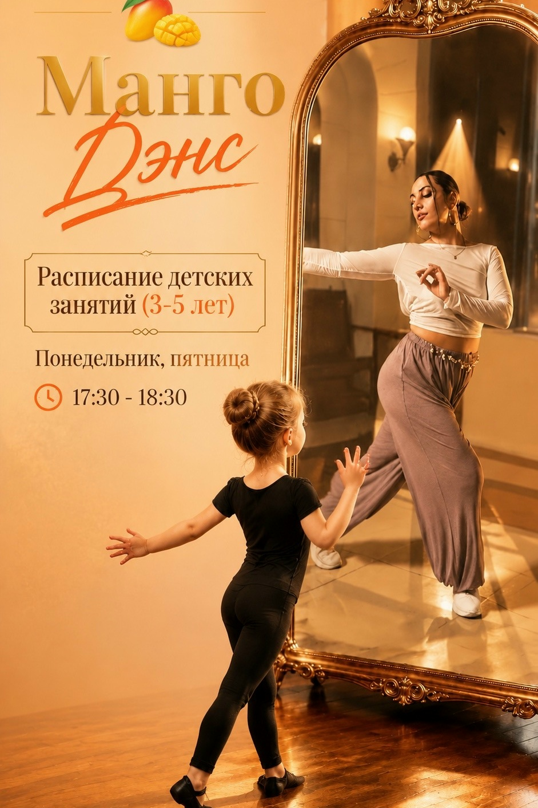
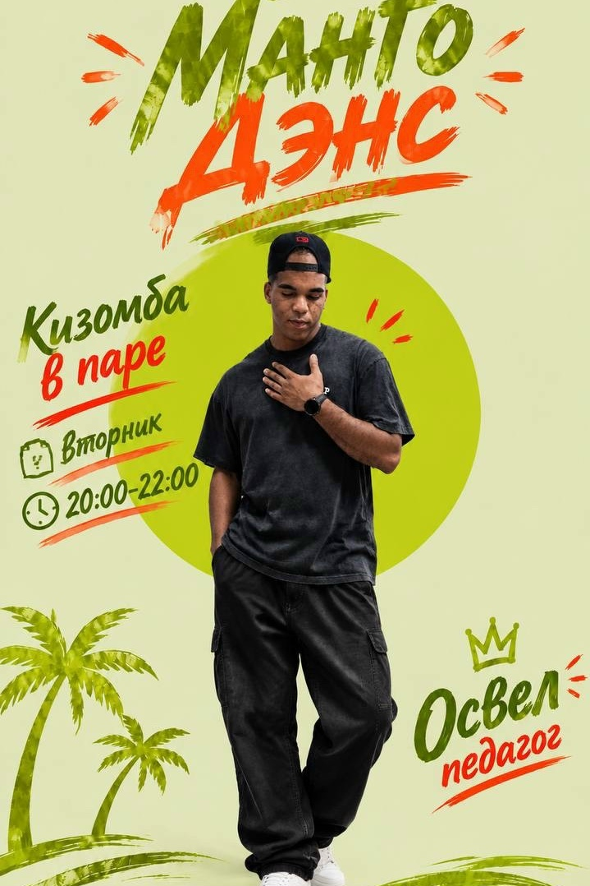
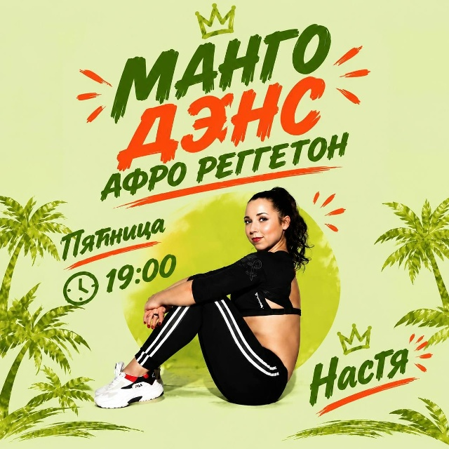

Диана К.
Бачата · Salsation · Dance Fit
ШКОЛА ТАНЦЕВ · МОСКВА, СТРОГИНО
Сальса, бачата, кизомба — и ты.
Найди свой ритм в MAN’GO DANCE.
01 / НАПРАВЛЕНИЯ
В паре или соло. Мягко или энергично.
Выбирай то, что откликается тебе.
Dance Fit · Salsation · Здоровая спина · Творческая группа

МАЛЕНЬКИЕ ШАГИ — БОЛЬШИЕ ОТКРЫТИЯ
Занятия для детей 3–5 лет: танцевальные движения, осанка и растяжка в игровой форме.
02 / РАСПИСАНИЕ
Выбери день — найди свой класс.
По афише студии. Актуальность уточняйте при записи.
Утренние группы, детские занятия и дополнительные направления уточняйте у администратора.
03 / ПЕДАГОГИ
Знакомься с людьми,
которые делятся своим ритмом.
Бачата · Salsation · Dance Fit

Сальса в паре · Кизомба

Афро реггетон
Направления указаны по предоставленным афишам. Состав групп и педагогов может меняться.
НЕ ОТКЛАДЫВАЙ СВОЙ ПЕРВЫЙ ШАГ
Выбери направление и напиши нам.
Поможем подобрать группу и расскажем об условиях.
Откроется чат студии. Сообщение отправляете вы.
04 / МЕСТО ВСТРЕЧИ
Москва, ул. Маршала Катукова, 22к2
5 этаж · метро Строгино
Позвонить и подобрать занятие
ВКонтакте ↗Telegram ↗В студии также есть английский и испанский для детей и взрослых. Подробности — у администратора.